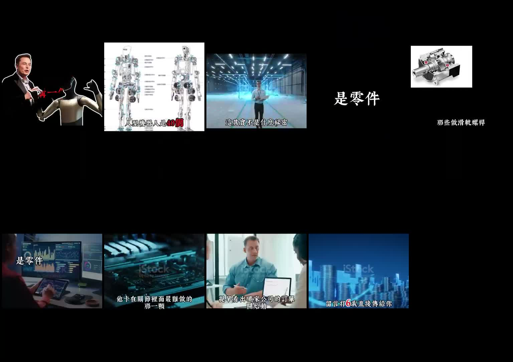

Facebook Reel｜亓大基金：人形機器人零件題材股促銷話術與投資風險筆記
一句話摘要
亓大基金的 Facebook Reel 以人形機器人量產、40 多個關節、滑軌／螺桿／減速齒輪等零件需求作為投資題材敘事，最後導向「留言打 6」索取名單／加入資訊。本文保存可見貼文、ASR 逐字稿與畫面證據，重點不是推薦標的，而是把「AI／機器人題材股＋報牌群組」常見話術拆開，作為投資風險與社群內容判讀案例。
來源脈絡
- 來源：Facebook Reel「亓大基金」。
- 分享連結：https://www.facebook.com/share/v/1Rjw5xaSgc/?mibextid=wwXIfr
- Canonical：https://www.facebook.com/reel/1773918383799232
- yt-dlp 解析標題：👉👉代碼已公佈，點擊領取查看
- 可見互動：Facebook 登出頁面約 2 個心情、3 則留言；yt-dlp metadata 顯示約 1,470 次觀看。
- 影片長度：約 1 分 50 秒。
- 重要提醒：本文不是投資建議，也不推薦任何股票或群組；僅保存公開內容並拆解社群投資促銷話術。
可見貼文文案
貼文主文主打「下一波題材列車」與「免費加入」：
- 每週嚴選 3 檔當紅題材潛力股。
- 上下車位即時更新、精準鎖定。
- 每月實戰績效全揭露。
- 獨門主力動向追蹤術。
- 盤前就報、絕不馬後炮。
- 每週操作約 10 檔，上週「全壘打」零敗績。
- 免費加入，第一時間掌握市場資訊。
這些是典型「題材股／報牌／跟單社群」導流語言，應視為高風險金融內容，而不是已驗證研究報告。
影片內容重點（ASR 摘要）
影片以人形機器人產線與零件需求作為敘事：
- 人形機器人一台可能有 40 多個關節，每個關節都需要減速機、螺桿、軸承／滑軌、感測器等零件。
- 影片主張真正值得關注的不是整機，而是上游零件與關節供應鏈。
- 敘事提到滑軌、螺桿、減速齒輪等台灣廠商可能受惠。
- 影片最後導向：「目前最有機會受惠的公司和整理邏輯放在一起，想看的留言打 6」。
畫面證據

接觸表可見：
- Elon Musk／人形機器人示意、機器人關節圖與自動化工廠素材。
- 零件、滑軌、螺桿、工廠與 iStock 影像素材。
- 結尾字幕可見「留言打6我直接傳給你」。
- 沒有看到公開畫面直接列出股票代碼或完整公司名單；名單被設計成留言導流。
判讀重點：哪些可信、哪些未驗證
### 可確認
- 這支 Reel 確實把「人形機器人零件」包裝成投資題材。
- 影片的關鍵邏輯是：整機量產會放大關節與零件需求，上游供應鏈可能先反映。
- 內容明確導向留言互動／索取名單，屬於社群投資導流。
### 未確認
- 未公開列出實際股票代碼與公司清單。
- 「上週全壘打零敗績」缺乏可驗證交易紀錄。
- 「盤前就報」「上下車位精準鎖定」未提供第三方稽核。
- 人形機器人零件需求成長，不等於特定股票一定受惠或適合追價。
實用檢核清單
遇到類似 AI／機器人題材股短影音，可以先問：
- 是否公開列出完整標的、進出場時間與失敗紀錄？
- 是否有揭露利益關係、是否收費、是否導向 LINE／社群／私訊？
- 是否把產業趨勢直接等同個股報酬？
- 是否只展示成功案例，不展示回撤、停損與錯誤判斷？
- 是否用「免費加入」「留言打數字」「代碼已公佈」製造 FOMO？
- 是否有合規聲明與投資顧問資格資訊？
收進知識庫的理由
這則不是一般 AI 工具資訊，而是 AI／機器人產業敘事被拿來做投資導流的案例。對 AI 學習雷達來說，它提醒我們：技術趨勢本身可以研究，但社群短影音常會把趨勢、題材、FOMO 與群組招募混在一起；保存下來有助於未來教學或內容判讀時作為案例。
ASR 逐字稿節錄
以下為 Whisper base 對影片音訊的自動轉錄，可能包含同音字或專有名詞錯字，僅作內容證據參考：
> 那麼是拉這個月底產線就要開始生產人型機器人但真正會爆的不是機器人本身我先講一個數字你聽完大概就懂了一台人型機器人身上有超過40個關節40個一台車會動的地方不到10個一顆引擎就搞定人型機器人是40個每一個裡面都要塞進軟速機、螺桿、計程、感測器等於40克小引擎所以這東西一旦開始量產需求不是加法是懲罰這其實不是什麼秘密台積電動市長早就講過人型機器人的市場未來可能是電動車的時辨當時很多人沒太在意現在回頭看那句話講得根本不是機器人是零件那台灣呢手部關節最難的不是設計是進度那個等級全世界做得出來的每幾個地方台灣剛好是其中一個所以最近盤面開始出現一個現象那些做滑軌、螺桿、減速持輪的牢場即當開始動這條線有個規律上游永遠比下游早遇到兩季所以真正賺錢的人看得不是機器人賣了幾台是零件什麼時候先開始動而現在零件已經在動了市面上一堆機器人概念但真正卡住關鍵零件的其實沒幾家而其中有一家他不做整機他卡在關節裡面最難做的那一顆台灣以外幾乎沒人做得出來這幾天我把它整個翻了一遍真正重要的不是哪一堆股票而是自己怎麼從公開資訊提早看出哪家公司的訂單開始動哪家公司真正打進供應鏈我把目前最有機會收費的公司和我的整理落級全部放在一起想看的留言打6我直接傳給你但我先提醒你現在市場看的還是機器人等大家都開始討論的時候第一波機會可能已經過去了
原始連結
Facebook 分享連結：
https://www.facebook.com/share/v/1Rjw5xaSgc/?mibextid=wwXIfr
Facebook canonical：